# 问题说明
基于给定目标城市，城市可由参赛选手自己选择。通过网络、书籍等方法整理收集目标城市的文旅数据，包括但不限于城市的历史、名人、景点、饮食特色、热门店铺等信息，构建语料库，并基于大模型微调的相关技术方法，实现基于大模型的语料库问答系统。其中对于大模型的选择可以选取一些开源模型，如 GLM、modelscope 开源的 GPT-3 中文版本、LLaMA、BLOOM 等。
此次基于 chatglm3-6b 进行微调，使用较低的配置实现较高的性能
24/04/09 突然觉得在做无意义的事，找一段文本或者根本不找，让一个模型（copilot、kimi…）跑出些问答数据集，再塞给另一个模型微调……
# 期望
基于目标城市的文旅数据，构建语料库并进行大模型的微调，实现基于大模型的语料库问答系统。通过问答系统实现用户输入以下问题，问题示例如下：
请推荐 XX 城市的三个最热门的景点？
- XX 景点位于什么地方？
- 介绍一下 XX 景点的历史？
- XX 附近有什么推荐的小吃店铺？
该问答系统能够给出上述问题的回复。
# 要求
收集目标城市的相关文旅数据，进行语料库的构建（方法不限），并基于语料库进行大模型微调，实现基于该语料库的问答系统。
- 详细方案内容完备，具有可行性和先进性；
- 模型支持至少两轮问答；
- 具备大模型的基础问答能力和基于语料库的问答能力。考核方法基于用户提供的语料范围，编制问题，对模型进行提问，对模型问答能力进行评估；
- 具有交互界面，可通过浏览器进行访问，页面的访问延迟和问答的响应延迟不超过 10s；
- 语料库数据不低于 3000 条。
# TODO
（instruction + output + history + input + ？）查看 SHA1 码：certutil -hashfile <filename> SHA1
（在建了在建了…）
某某某的周边热门店铺有哪些，不太方便输入，可以考虑语聊集 + 工具调用的方法，好像也挺方便，比如 instruction 灵隐寺周边的奶茶店 output 古茗、一点点等……
（支持多轮，如果能再问 “灵隐寺最近的古茗”，此处调用 API 回答是否能加分）
”Tool: 工具模式，模型除了对话外，还可以通过工具进行其他操作 “
似乎不需要结合？
24/03/30 Lora 微调好了，且无报错的导出了模型，但是问答效果不好，想试试 DPO
04/01 开始着手微调的优化：秩 (r)、缩放系数 (alpha)：一般 alpha 是 r 的两倍
是否需要制作偏好数据集（太麻烦了，优先级低）
“微调是为了修正一些向量的参数”，但假如通过微调修改了 chatglm 的自我认知，？
04/02 偏好数据集，制作中！
制作好了，第一次 DPO 微调
<img src="image-20240402153832714.png" alt="image-20240402153832714" style="zoom: 67%;" />
微调出来效果貌似也一般，如果想准确回答的话，不应该用过向量数据库吗（后知后觉），毕竟 chatGPT 也无法做到数据向的精准回答（增大某些词的参数吗…）
04/03 微调出了什么 **… 数据集不够大，轮数太多，导致了灾难性遗忘，只会阿巴阿巴了
调小轮数试试（DPO epochs3，r8，alpha16，0.15）
04/06 看看 open AI 文档 Question answering using embeddings-based search
Note: To answer questions based on text documents, we recommend the procedure in Question Answering using Embeddings.
推荐使用 Embedding，不涉及微调，难搞
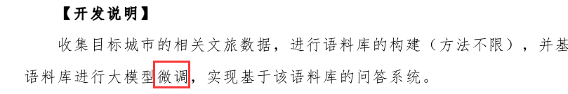
04/08 扩充一下数据集，再试着调一下
模型评估（loss、准确度）
知名景点
/ 小众景点
不存在的景点不乱答（幻觉现象少）
conversation 里有 image 属性，似乎可以使用 / 拓展
24/03/30 尝试看源码，把 chatglm 提供的综合 demo 去除 streamlit
03/31 fastAPI ? 似乎就 chat 而言，每次需要传输的，就是 conversation.py 里的
04/01 查看了 FastAPI、uvicorn、Flask、ASGI/WSGI，
还是保留 streamlit（比如使用它的 session）+fastAPI 吧，好复杂（shi 山代码是如何形成的） 04/02 尝试用 FastAPI 给前端提供数据了
目前看需要俩，一个是前端加载时提供一个 client；一个是 conversation 对话 从好几个方向写，但总感觉很卡手。无法同时部署 streamlit 和 uvicorn（FastAPI），俩服务器就不互通，数据使用起来很难受。Flask 和 streamlit 一样，是写在后端的前端界面。如果用 Vue+node.js，中间多出来的 request、response，以及前端该如何做，很陌生
04/03 有点混乱，简单的来看，就是前端，携带一推数据，用 get 向后端发起请求
后端收到请求后，此处对应的功能就是原代码中的 if prompt_text
需要解决的
BaseModel 类（删掉就能跑了，好神奇） history 这些参数该如何存储（json）
04/04 改来改去，改好了一个，
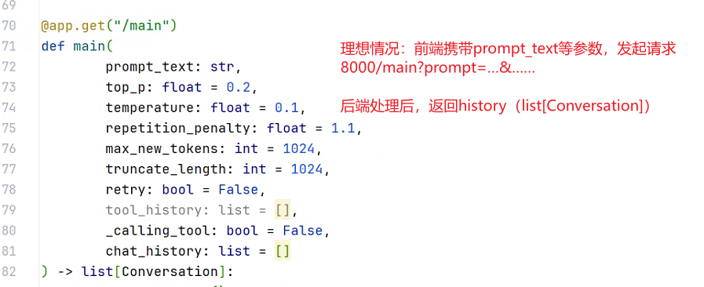
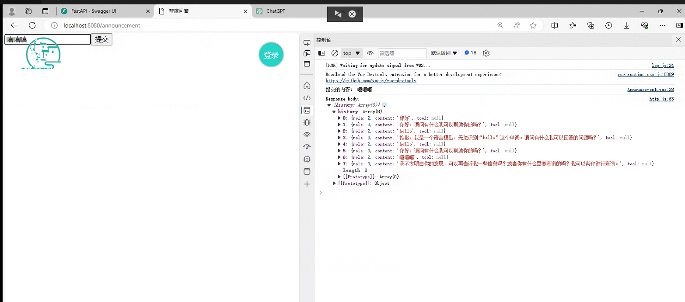
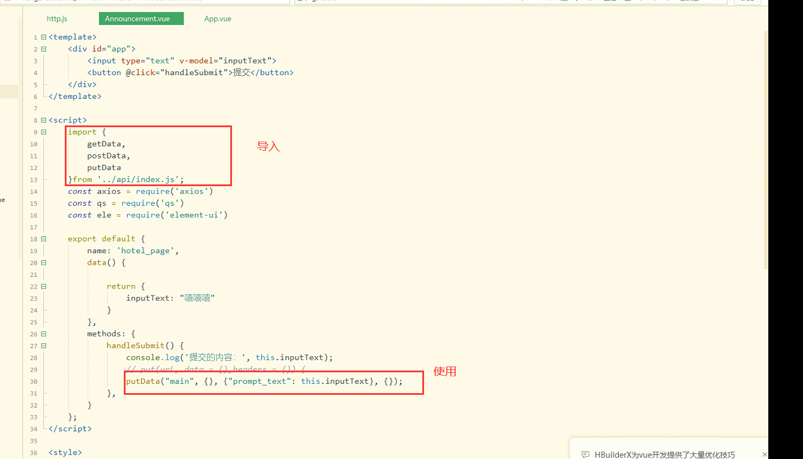
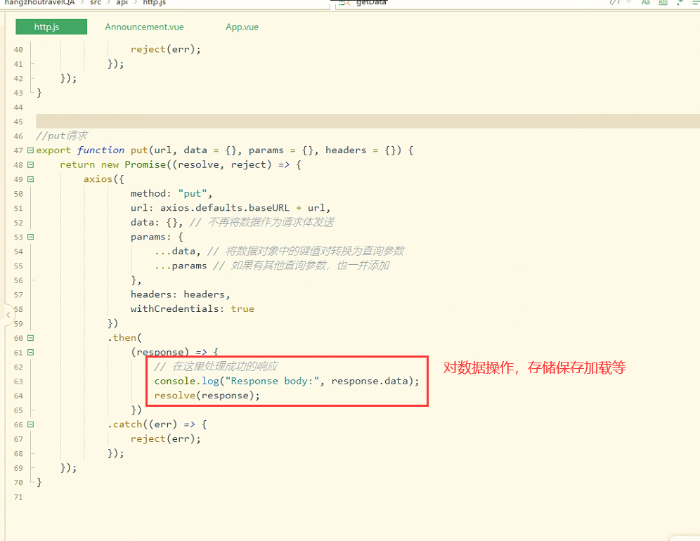
# 后续（计算机设计大赛）
初步解决方法：问答的函数内，放一个函数，实现: 先判断内容是否与网站内容有关，有则返回一个字符串 "您是否在查找这个 {网站链接}"，无则返回空。并拼接到此次回答中。
此处的判断，"与… 有关联"。v1：用列表（优先级）+ 字典（键值对） [{"西湖": "URL"}, ……]，对输入进行处理，输入包含的词是否在字典里
借鉴了四五年前的项目 https://github.com/Ma-Tao007/xunfei-vioceAl-vueSDK.git
没想到讯飞这么早就把语音转文字免费使用了吗（500 次 / 天）
……
https://github.com/phidatahq/phidata
<img src="image-20240428115123566.png" alt="image-20240428115123566" style="zoom:50%;" />
05/06 截止前
老师认为还是太空了，技术也得讲，检索得讲，可以个例子，说 “岳庙” 就能知道指的是 “岳王庙”
# 相关知识
# PEFT
PEFT（Parameter-Efficient Fine-Tuning）是 hugging face 开源的一个参数高效微调大模型的工具，里面集成了 4 种微调大模型的方法，可以通过微调少量参数就达到接近微调全量参数的效果，使得在 GPU 资源不足的情况下也可以微调大模型。
# llama-factory
Unify Efficient Fine-Tuning of 100+ LLMs，GitHub 上的一个统筹了支持多种大语言模型微调的工具
项目特色
多种模型：LLaMA、LLaVA、Mistral、Mixtral-MoE、Qwen、Yi、Gemma、Baichuan、ChatGLM、Phi 等等。
集成方法：（增量）预训练、（多模态）指令监督微调（SFT）、奖励模型训练、PPO 训练、DPO 训练和 ORPO 训练。
多种精度：32 比特全参数微调、16 比特冻结微调、16 比特 LoRA 微调和基于 AQLM/AWQ/GPTQ/LLM.int8 的 2/4/8 比特 QLoRA 微调。
先进算法：GaLore、BAdam、DoRA、LongLoRA、LLaMA Pro、Mixture-of-Depths、LoRA+、LoftQ 和 Agent 微调。
实用技巧：FlashAttention-2、Unsloth、RoPE scaling、NEFTune 和 rsLoRA。
实验监控：LlamaBoard、TensorBoard、Wandb、MLflow 等等。
极速推理：基于 vLLM 的 OpenAI 风格 API、浏览器界面和命令行接口。
于是就用这个了
链接 https://github.com/hiyouga/LLaMA-Factory/blob/main/README_zh.md
# 微调
微调不是为了准确的搜索数据库（Embeddings 才是），微调是为了修正一些向量的参数：比方说我想写一个短视频口播文案，同样是论证观点，口播并不会像写论文等书面文案一样用严格的格式让你理解逻辑结构，所以一般口播中就不会用首先其次再次这样的说法。那么我需要通过训练把这些词的权重降低。
重点是方法和高质量数据集
微调可以分为全微调和部分微调两个方法：
- 全微调（Full Fine-tuning）：全微调是指对整个预训练模型进行微调，包括所有的模型参数。在这种方法中，预训练模型的所有层和参数都会被更新和优化，以适应目标任务的需求。这种微调方法通常适用于任务和预训练模型之间存在较大差异的情况，或者任务需要模型具有高度灵活性和自适应能力的情况。Full Fine-tuning 需要较大的计算资源和时间，但可以获得更好的性能。
- 部分微调（Repurposing）：部分微调是指在微调过程中只更新模型的顶层或少数几层，而保持预训练模型的底层参数不变。这种方法的目的是在保留预训练模型的通用知识的同时，通过微调顶层来适应特定任务。Repurposing 通常适用于目标任务与预训练模型之间有一定相似性的情况，或者任务数据集较小的情况。由于只更新少数层，Repurposing 相对于 Full Fine-tuning 需要较少的计算资源和时间，但在某些情况下性能可能会有所降低。
从另一层次看，微调预训练模型的方法：
- 微调所有层：将预训练模型的所有层都参与微调，以适应新的任务。
- 微调顶层：只微调预训练模型的顶层，以适应新的任务。
- 冻结底层：将预训练模型的底层固定不变，只对顶层进行微调。
- 逐层微调：从底层开始，逐层微调预训练模型，直到所有层都被微调。
- 迁移学习：将预训练模型的知识迁移到新的任务中，以提高模型性能。这种方法通常使用微调顶层或冻结底层的方法。
# p-tuning 和 Lora 的区别
# p-tuning
p-tuning v2 并不是一个新技术，而是之前用于少样本学习，少样本学习分为离散型模板和连续性模板，离散性模板主要是构建文字描述模板，而连续型模板则是插入连续型 token 构成的模板，之前文章中我也讲述了离散型和连续型两种 prompt 方法。
p-tuning v2 简单来说其实是 soft prompt 的一种改进，soft prompt 是只作用在 embedding 层中，实际测试下来只作用在 embedding 层的话交互能力会变弱，而且冻结模型所有参数去学习插入 token，改变量偏小使得效果有时候不太稳定，会差于微调。p-tuning v2 则不只是针对 embedding 层，而是将连续型 token 插入每一层，增大改变量和交互性。
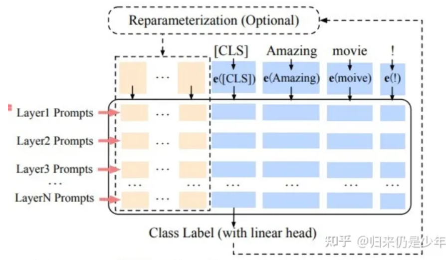
soft prompt 比较依靠模型参数量，在参数量超过 10B 的模型上，效果追上了 fine-tune，但是 ptuning v2 因为每层插入了 token，增大模型训练的改变量，更加适用于小一点的模型
# Lora
Lora 主要在模型中注入可训练模块，大模型在预训练完收敛之后模型包含许多进行矩阵乘法的稠密层，这些层通常是满秩的，在微调过程中其实改变量是比较小的，在矩阵乘法中表现为低秩的改变，注入可训练层的目的是想下游微调的低秩改变由可训练层来学习，冻结模型其他部分，大大减少模型训练参数。
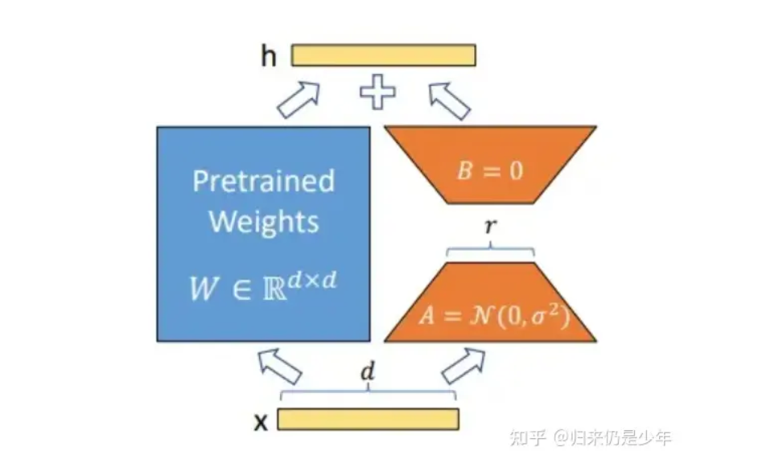
推理计算的时候，因为没有改变预训练权重，所以换不同的下游任务时，lora 模型保存的权重也是可以相应加载进来的，通过矩阵分解的方法参数量减少了很多，且推理时可以并行，对于推理性能并没有增加多少负担，算是比较好的低资源微调方法。
# Low-rank Adaptation 低秩适配:
低秩适配方法致力于将模型权重的改变限制在一个低秩子空间内。这通常涉及对模型的权重矩阵进行分解，只微调其中的一小部分参数。这样可以有效减少计算资源的消耗，同时仍然允许模型有足够的灵活性来学习新任务。LoRA 和它的变种，如 Q-LoRA、Delta-LoRA、LoRA-FA 等，都属于这个类别。
# 总结
共同点
两者对于低资源微调大模型的都是冻结大模型参数，通过小模块来学习微调产生的低秩改变。但目前存在的一些问题就是这两种训练方式很容易参数灾难性遗忘，因为模型在微调的时候整个模型层参数未改变，而少参数的学习模块微调时却是改变量巨大，容易给模型在推理时产生较大偏置，使得以前的回答能力被可学习模块带偏，在微调的时候也必须注意可学习模块不能过于拟合微调数据，否则会丧失原本的预训练知识能力，产生灾难性遗忘。
最好能够在微调语料中也加入通用学习语料一起微调，避免产生对微调语料极大的偏向，在 instruct gpt 论文中也提到在强化学习 ppo 的时候模型也会很容易对于 ppo 数据拟合，降低模型通用自然语言任务能力，所以在 ppo loss 中加入了 SFT 梯度和预训练梯度来缓解这种遗忘问题。
区别
- LoRA（Low-Rank Adaptation）：LoRA 是一种高效的参数微调技术，旨在解决过拟合问题。它通过增加一个参数来调整模型中的知识级别，使其更好地适应特定任务。虽然不需要大量带标签的数据，但可能需要更多的计算资源
- P-tuning v2：P-tuning v2 是一种改进的微调方法，它通过使用预训练模型的一部分来进行微调，而不是使用整个预训练模型。这种方法可以减少计算需求，同时提高模型性能。然而，P-tuning v2 可能需要更精细的参数调整
如果你有大量标注数据，SFT（Standard Fine-Tuning） 可能是更好的选择。对于半监督学习场景，LoRA 可能更适合。而对于防止过拟合和轻量级微调场景，Freeze 可能更合适。请根据你的需求选择最适合的方法，以优化你的模型性能。（来自 copilot）
# Fine-tune a Mistral-7b model with Direct Preference Optimization
hugging face 上某一榜上前三提供的一种微调方法，前提：已经经过监督式微调的模型 + 高质量偏好数据集，不知道能不能学习一下
# 以下是作者提供的参数
# LoRA configuration
peft_config = LoraConfig(
r=16,
lora_alpha=16,
lora_dropout=0.05,
bias="none",
task_type="CAUSAL_LM",
target_modules=['k_proj', 'gate_proj', 'v_proj', 'up_proj', 'q_proj', 'o_proj', 'down_proj']
)
# Training arguments
training_args = TrainingArguments(
per_device_train_batch_size=4,
gradient_accumulation_steps=4,
gradient_checkpointing=True,
learning_rate=5e-5,
lr_scheduler_type="cosine",
max_steps=200,
save_strategy="no",
logging_steps=1,
output_dir=new_model,
optim="paged_adamw_32bit",
warmup_steps=100,
bf16=True,
report_to="wandb",
)
# Create DPO trainer
dpo_trainer = DPOTrainer(
model,
ref_model,
args=training_args,
train_dataset=dataset,
tokenizer=tokenizer,
peft_config=peft_config,
beta=0.1,
max_prompt_length=1024,
max_length=1536,
)
# Fine-tune model with DPO
dpo_trainer.train()
# 学习率的重要性
目前深度学习使用的都是非常简单的一阶收敛算法，梯度下降法，不管有多少自适应的优化算法，本质上都是对梯度下降法的各种变形，所以初始学习率对深层网络的收敛起着决定性的作用，下面就是梯度下降法的公式
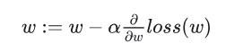
这里 α 就是学习率，如果学习率太小，会导致网络 loss 下降非常慢，如果学习率太大，那么参数更新的幅度就非常大，就会导致网络收敛到局部最优点，或者 loss 直接开始增加，如下图所示。
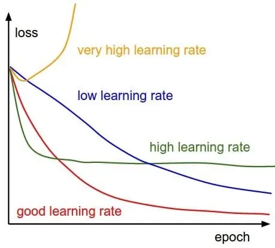
# 大模型微调步骤
大模型微调如上文所述有很多方法，并且对于每种方法都会有不同的微调流程、方式、准备工作和周期。然而大部分的大模型微调，都有以下几个主要步骤，并需要做相关的准备：
- 准备数据集：收集和准备与目标任务相关的训练数据集。确保数据集质量和标注准确性，并进行必要的数据清洗和预处理。
- 选择预训练模型 / 基础模型：根据目标任务的性质和数据集的特点，选择适合的预训练模型。
- 设定微调策略：根据任务需求和可用资源，选择适当的微调策略。考虑是进行全微调还是部分微调，以及微调的层级和范围。
- 设置超参数：确定微调过程中的超参数，如学习率、批量大小、训练轮数等。这些超参数的选择对微调的性能和收敛速度有重要影响。
- 初始化模型参数：根据预训练模型的权重，初始化微调模型的参数。对于全微调，所有模型参数都会被随机初始化；对于部分微调，只有顶层或少数层的参数会被随机初始化。
- 进行微调训练：使用准备好的数据集和微调策略，对模型进行训练。在训练过程中，根据设定的超参数和优化算法，逐渐调整模型参数以最小化损失函数。
- 模型评估和调优：在训练过程中，使用验证集对模型进行定期评估，并根据评估结果调整超参数或微调策略。这有助于提高模型的性能和泛化能力。
- 测试模型性能：在微调完成后，使用测试集对最终的微调模型进行评估，以获得最终的性能指标。这有助于评估模型在实际应用中的表现。
- 模型部署和应用：将微调完成的模型部署到实际应用中，并进行进一步的优化和调整，以满足实际需求。
# 使用 LLaMA-Factory 示例
数据集准备
按照要求 LLaMA-Factory\data\README_zh.md 里的格式准备好数据集，格式的话，可以在生成时就按照特定格式生成，也可以后期写脚本修改成需要的格式
在 LLaMA-Factory\data\dataset_info.json 把该数据集配置好 需要使用 SHA1 码。
certutil -hashfile <filename> SHA1 # 查看SHA1码
训练
- 启动 LLaMA-Factory 的 webUI
- 设置好参数（参数可以参考下面文档调）
模型评估
- 训练结果好与坏可以从给出的 loss 函数来看，不震荡、收敛到 1 左右的就还行
模型调用
可以在 webUI 的 chat 部分加载，把训练好的适配器加上后，即可调用。缺点是貌似有 bug，有时候会出现 assistant、自问自答等情况
也可以导出模型，使用 chatglm 文件夹下的 demo 启动的话，缺点是导出耗时
# 调参
以下是 LLaMA-Factory 里，可以修改的大部分参数
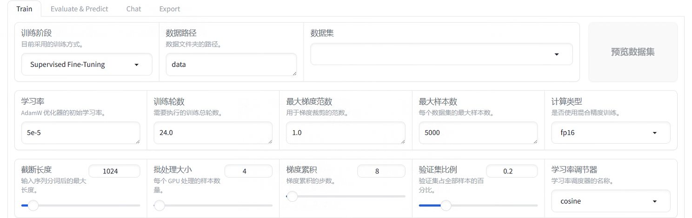
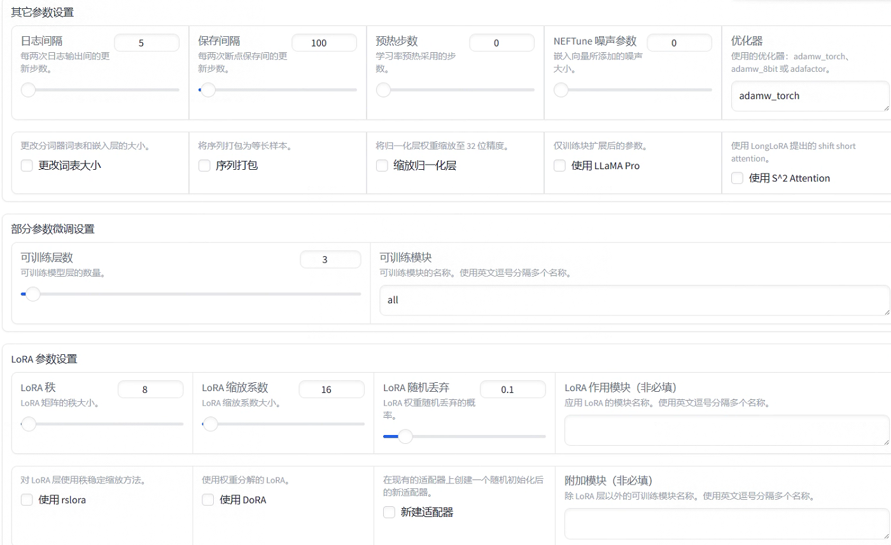
# 训练阶段（SFT…）
SFT
监督微调
DPO
直接偏好微调，一个问题 X 多个回答（优质、劣质）
…
# 学习率
数值举例：5e-5 的计算是科学计数法中的一个数值，即 5 乘以 10 的负 5 次方，即 0.00005
| 学习率过大 | 学习率过小 | |
|---|---|---|
| 学习速度 | 快 | 慢 |
| 使用时间点 | 训练开始 | 一定轮数 |
| 副作用 | 易损失值爆炸；易震荡 | 易过拟合；收敛速度慢 |
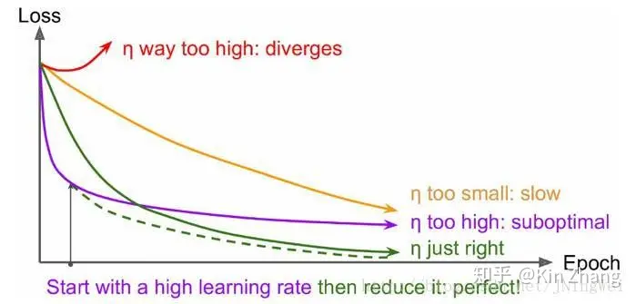
- 曲线 初始时 上扬 【红线】：
Solution：初始 学习率过大 导致 振荡，应减小学习率，并 从头 开始训练 。 - 曲线 初始时 强势下降 没多久 归于水平 【紫线】：
Solution：后期 学习率过大 导致 无法拟合，应减小学习率，并 重新训练 后几轮 。 - 曲线 全程缓慢 【黄线】：
Solution：初始 学习率过小 导致 收敛慢，应增大学习率，并 从头 开始训练 。
参考链接：深度学习：学习率 learning rate 的设定规律
# Epochs 训练轮数
目前智旅项目的轮数都是在 3~24 轮。跟学习率、数据集等有关。轮数过多会过拟合。
# 最大梯度范数
梯度是指损失函数对模型参数的偏导数，它表示了模型在当前参数值下的变化方向和速度。通过限制梯度的最大范数，可以控制模型参数的更新幅度，防止梯度爆炸（gradient explosion）或梯度消失（gradient vanishing）
例如前面我们学的学习率，你设置一个较大的值，那极可能会梯度爆炸，你会看到曲线过山车一样！所以这个参数可以一定程度上减少这种情况！一般默认 1。
# 梯度累积
梯度累积允许我们将多个小批次的梯度相加，然后再进行参数更新。梯度累积对于具有较大批大小的模型或具有较小 GPU 显存的情况特别有用
这相当于让大模型去学习，如果一边学，一边把之前所学进行总结，通常比较累，而且需要消耗的显存也越大。如果让大模型看了 10 页书之后再总结，是不是学得更轻松些？占用的显存资源也少了。！但也会导致训练速度变慢。
# 计算类型（FP16…）
FP16 是 16 位浮点数数据类型，相比于传统的 32 位浮点数（FP32），它可以减少一半的存储空间和计算开销。在混合精度训练中，模型参数和梯度可以使用 FP16 进行计算和存储，从而减少内存占用和计算时间。然而，由于 FP16 的精度较低，可能会引入一些数值精度损失，导致训练过程中的数值不够准确
BF16 是一种更为近似于 FP32 的 16 位浮点数数据类型。相比于 FP16，BF16 在保持较低的存储和计算开销的同时，提供了更接近 FP32 的数值精度。因此，BF16 在混合精度训练中可以更好地平衡计算效率和数值精度。
有些模型会有推荐训练方法，你只需要知道什么回事即可，默认 FP16
# 截断长度
一条数据分词后会成为一个 token 序列，当 token 序列的长度超过截断长度时会被分割成若干段输入进模型，这里保持 1024 不变
# Batch size (批处理大小)
一般来说，在合理的范围之内，越大的 batch size 使下降方向越准确，震荡越小；batch size 如果过大，则可能会出现局部最优的情况（这也是其中的一个缺点吧）。小的 bath size 引入的随机性更大，难以达到收敛，极少数情况下可能会效果变好。
会影响训练的稳定性，Batch size 过小会使 Loss 曲线振荡的比较大，大小一般按照 2 的次幂规律选择，这是为了硬件计算效率考虑的。
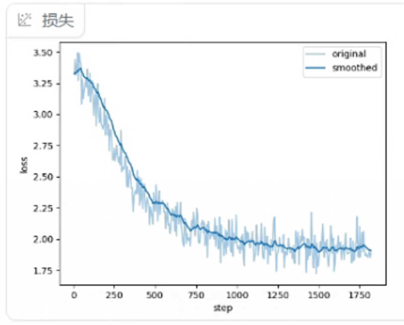
（此处问题可能 batch size 太小了（如果学习率问题不大的话））
考虑到我们的显卡，一般设置在 2~8 之间
# 验证集比例
一般设置成 0.2
# 学习率调节器
使用默认的 cosine
# 其他参数
……
# 部分参数
可训练层数
……
可训练模块
……
# LoRA 参数设置
LoRA 秩
一般为 8，是缩放系数的一半
LoRA 缩放系数
一般为 16
随机丢弃
一般设置成 0.1
# loss 损失函数
train loss 不断下降，test loss 不断下降，说明网络仍在学习；
train loss 不断下降，test loss 趋于不变，说明网络过拟合；
train loss 趋于不变，test loss 不断下降，说明数据集 100% 有问题；
train loss 趋于不变，test loss 趋于不变，说明学习遇到瓶颈，需要减小学习率或批量数目；
train loss 不断上升，test loss 不断上升，说明网络结构设计不当，训练超参数设置不当，数据集经过清洗等问题。
# top-p 采样 /temperature 温度
temperature 官网解释
What sampling temperature to use, between 0 and 2. Higher values like 0.8 will make the output more random, while lower values like 0.2 will make it more focused and deterministic. We generally recommend altering this or top_p but not both.
翻译：“采样温度” 是在 0 到 2 之间选择的参数。较高的值（如 0.8）会使输出更具随机性，而较低的值（如 0.2）则会使输出更集中，更确定性。通常，我们建议修改 “采样温度” 或 “top_p” 其中之一，而不是同时修改两者。
top-p 采样 官网解释
An alternative to sampling with temperature, called nucleus sampling, where the model considers the results of the tokens with top_p probability mass. So 0.1 means only the tokens comprising the top 10% probability mass are considered.
翻译："nucleus sampling"（核采样或者叫做 top-p 采样）是一个替代温度采样的方法，其中模型考虑了具有 top_p 概率质量的 token 的结果。因此，0.1 表示只考虑包含在最高 10% 概率质量中的 token。
总结
"temperature" 影响了结果的随机性，而 "top_p" 则影响了结果的确定性。但他们是从不同的角度影响输出的：temperature 更偏向于控制输出的 “随机性”，而 top-p 则是在给定的可能结果中设定一个 “阈值”。
# 文本相似度
为了评估我们微调后的效果，我们引入文本相似度，而使用余弦相似度来判断文本相似度高与否
初步实现：jieba 分词 + 余弦相似度 + numpy 处理 + matplotlib.pyplot 画图
# 计算平均值
average = sum(data) / len(data)
# 输出结果
print("平均值为:", average)
# 生成示例数据，假设这是余弦相似度的一些值
cosine_similarities = data # 生成1000个随机余弦相似度值，范围在0到1之间
# 统计相似度值的频率分布
bins = np.linspace(0, 1, 50) # 将x轴分为50个区间
hist, bins = np.histogram(cosine_similarities, bins=bins)
# 绘制频率分布图
plt.bar(bins[:-1], hist, width=(bins[1] - bins[0]), align='edge')
plt.xlabel("余弦相似度")
plt.ylabel("数量")
plt.title("余弦相似度的频率分布图")
plt.show()
# [LangChain Agent] ChatGLM-6B + 本地知识库 + 联网检索能力
# Agent
** 什么是 Agent？** 简单讲 Agent 利用 LLM 的理解推理能力来简化原本十分复杂的逻辑判断，决定什么问题由什么工具来解决，最后汇总成一个 “答案” 返回给用户。
LangChain 把这个过程用一个非常经典的 Prompt 模板定义了出来，这个模板中包括四个环节：
Thought（LLM 的思考过程和决定）
Action（要采取的行动以及要给他的输入）
Observation（执行 Action 后预计的输出结果）
Tools（Action 行动的调用函数）
prompt 示例
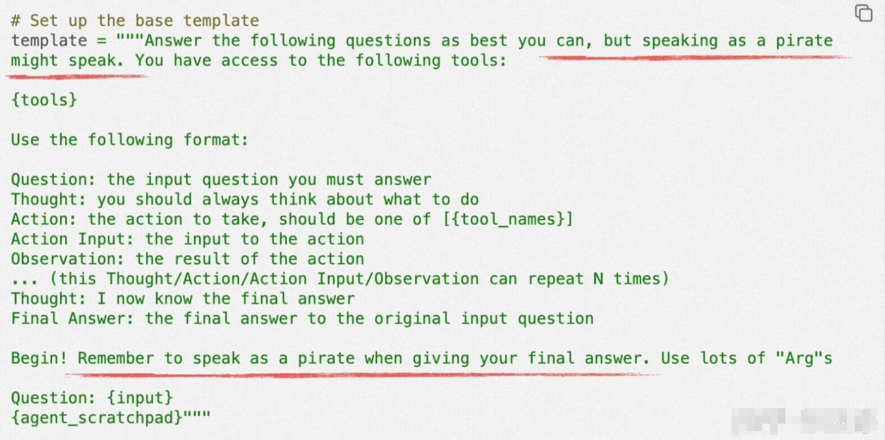
# RAG 检索增强
……
# 无头浏览器
……
# 引用：
初学者如何对大模型进行微调？ - 爱吃牛油果的璐璐的回答 - 知乎
p-tuning 和 Lora 的区别_ptuning 和 lora 对比 - CSDN 博客
Fine-tune a Mistral-7b model with Direct Preference Optimization | by Maxime Labonne | Towards Data Science
loss 问题汇总（不收敛、震荡、nan） - 知乎 (zhihu.com)
2023 - 全网首个 (Q) Lora 微调大模型指令说明书！收藏就对了！45 天玩转大模型微调 + 知识库落地！8/45 - 知乎 (zhihu.com)
LLaMA Factory+ModelScope 实战 —— 使用 Web UI 进行监督微调_modalscope webui 不能启动 - CSDN 博客
定制基于 ChatGLM-6B 的本地知识库 + 联网检索能力的 LangChain Agent - 知乎 (zhihu.com)